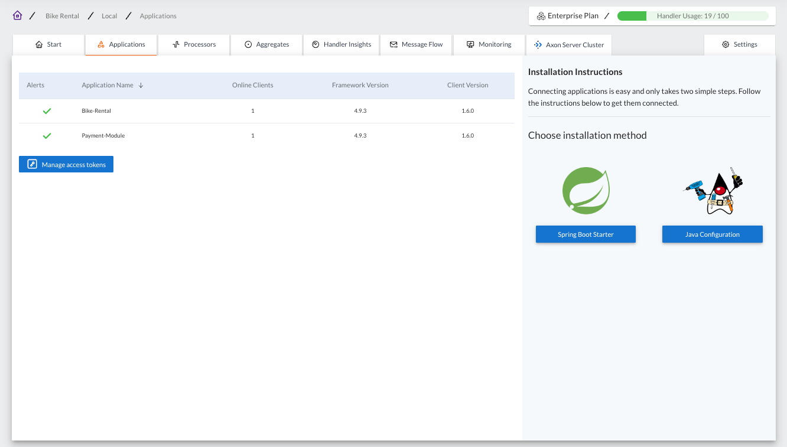
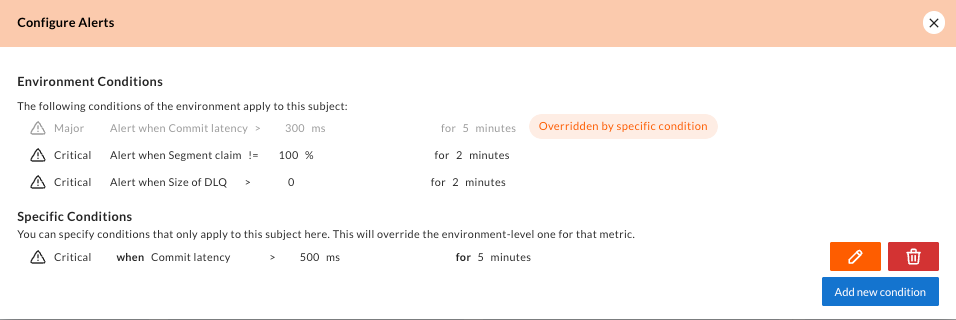

The Applications Tab
The applications tab provides an overall snapshot of your current environment. This includes detailed information about the AxonIQ applications running in your environment, as shown in the image below.

The tab content for the Applications is split up into two sections.
The "Applications list" section located on the left half (or top half in smaller screens) of the tab provides you with a list of all Axon Framework-based applications that the Console has detected. Here, you can see, for each application connected, if there is any alerts for them, the version of Axon Framework each application is using, the number of application instances connected, as well as the version number of the console-framework-client library the application is using to connect to AxonIQ Console.
The "Installation Instructions" section located at the right half (or bottom half in smaller screens) of the page provides links to the installation instructions to connect more applications.
Application details
Clicking on any of the applications shown in the Applications list will display all the known details for that particular application.
![Screenshot of the Applications tab in the AxonIQ Console dashboard showing the details for a specific application. The tab shows three tables with the list of online clients, the slowest 5 handlers in this application and the configuration for message buses and processors defined in the application, as well as the different libraries and versions used by this application. The details also include a panel on the left side with information about the alerts -if any- triggered for the application and a button to configure specific alerts for this application.](_images/ac-dasboard-applications-detail.png)
The application details include three tables that display:
-
The list of online clients (or instances) of this application, including the node name, the Axon Framework version, and the version of the
console-client-libraryused by the application to connect to AxonIQ Console. -
the slowest 5 handlers detected in the application, including information about the component for which the handler is defined, the message that the handler is associated with, and the time that each handler takes to process the message, expressed as the mean value and the ninetieth percentile value.
-
The configuration for the Axon Framework components used in the application:
-
Message buses, such as
CommandBus,QueryBusorEventStore. -
Processors
-
Library versions used by the application.
-
Application alerts
Apart from the specific details of the application, there is a panel on the right side of the tab containing the performance alerts detected for this application, if any.
This section also includes a button to configure the conditions under which an alert is triggered for this specific application.

The panel also displays, under the "Environment Conditions" section, the list of rules that are definned to trigger an alert for any application connected to this environment.
| The specific conditions defined in this panel only apply to the specific application selected in the Applications tab. If you want to configure alerts for all applications in this environment, you should use the Monitoring tab. |